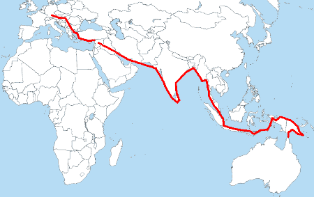

Oskar Speck
History's Saltiest Explorer
Oskar Speck is responible for one of histories longest solo kayak expeditions. Starting in Germany and ending in Australia, Speck's journey spanned 30,000 miles and nearly 7 1/2 years

Oskar Speck sitting in his foldable kayak; Sunnschien, which brought him safely from Germany to Australia. Photo via Vanity Fair
The Man Behind the Journey
- Oskar was born near Hamburg, Germany in 1907; one six
- WWI began when he was 7 years old and Germany had lost by the time he was 11.
- Speck's formative years were tough; with the post war depression and a rough home life, he found solice in kayaking on the many river in Northern Europe.
- The Great Depression was a kick in the teeth for Germany. Oskar, who ran a small electrical-contracting company, was out of a job.
- With no prospects in sight, Oskar looked to the horizon.
An Unlikely Expedition
Europe & the Mediteranean
- Enticed by the prospect of stricking it rich from mining, Oskar packed his kayak on May 13, 1932, and set off with the idea of traveling to Cyprus to work in the Copper Mines.
- Only 180 miles down river from where he started, Speck ran out of money; squandering most of it in riverside towns.
- In the spring of 1933, Oskar paddled out into the Mediteranean for the first time in his life, with little money, no direction, and no knowedge of how to swim.
- After a brutal 45 mile crossing from Turkey to Cyprus, Speck reached his initial goal in November of 1933. But he never looked for a job, he had bigger goals by this time.
The Middle East
- Oskar Speck spent 48 hours crossing from Cyprus to Syria after deciding to continue his adventure.
- Being deied passage through the Suez Canal forced Speck to take a 200 mile bus trip through northern Syria to the Euphrates river.
- Syria was tough for dangerous for Oskar; his boat was stolen and only barely recovered on one occassion and he had to evade bullets on more than one occassion. Two western travelers were murdered not long after he had passed through an area.
- Soon after arriving at the mouth of the Gulf of Persia, Oskar was struck by Malaria and was forced to stay in the desolate town of Bandar Abbas for 6 monthes.
- In September 1934, Oskar continued his journey.
India
- In November of the same year, Speck made landfall in India where he was greeted as a hero by british imperialists.For a time, his money problems were forgotten.
- Oskar made his way around the coast of India; the rough surf casued the majority of his capsizes the occuered thoughout the whole journey.
- On May 13, 1935, he arrived in Colombo, Ceylon where he relaxed for 3 monthes and enjoyed his celebrity.
- During this time, Nazi Germany bagan to reach a peak and he was often implored by his friends and family to return home. He was often accused of spying during his journey.
Final Leg?
- After leaving India and making his way to Singapore, Speck believed he was getting very close to his destination; Unfortunatly he still has 2 more years until his journey would come to a close.
- Oskar arrived in Jakarta, Indonesia to a suprisingly warm welcome. He left the city on January 11, 1937.
- Monsoon season and unfriendly natives kept him from his goal of reaching Australia by December of that year. On one occasion he was beaten and tied; an encounter from which he barely escaped with his life and boat, his possesions stolen.
- The attack force Speck to backtrack 1600 miles to seek medical attention in Surabaya.
- After recovering, Oskar began to have problems with the Dutch officials of New Guinea who would not allow him to prceed along his anticipated route to Australia. This forced Speck to circumnavigate almost all the way around the island and added another 2500 miles onto his journey.
A Warm Welcome
- After many years and much hardship, Australia was finally in sight.
- Oskar arrived on Thursday Island in 1939 to a less than warm welcome. He had less than $5 on him.
- Australian officials greeted him when he arrived. They are quoted in saying "Congratulations on an incredible achievement, Herr Speck. I regret to inform you that you are under arrest."
Speck's Legacy
- Speck spent the rest of WWII in Australian internment camps and his achievement was largely over shadowed by the war. When he was finally released after 6 years, he found his fortune in an opal mine and became a successful opal dealer and built a home in Sydney. He passed away in 1995 at the age of 98.
- Oskar Speck's story went largely untold and he lived in modest obscurity for the majority of his days. In one of his last letters he is quoted as saying "I am satisfied, recognition or no recognition. We have a strange situation—one of the most difficult world records to this day and it will still be in a hundred years—and wholly unknown. But I am satisfied. The war interfered much more with millions of fates. Why shouldn’t I be satisfied?"
- In 2016 a Western Australian woman Sandy Robson completed a similar route to Speck's in parts. She had to forgo certain areas due to war but she eventually finished the journey in just over 5 years.